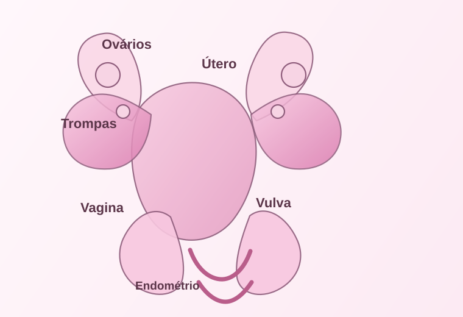

Sua rotina e sinais do corpo.
Plataforma educativa
Saúde feminina em cada etapa da vida.
O corpo feminino passa por mudanças profundas ao longo do tempo. O FemCare reúne informações claras sobre cada fase para apoiar aprendizado, autocuidado e bem-estar.
- 4fases da vida
- +20mudanças biológicas
- 100%informação acessível
Hormônios
ciclos + saúde
O que é o FemCare
Entenda o corpo feminino como parte de um processo natural.
Cada fase da vida traz transformações hormonais, físicas e emocionais. Conhecer essas mudanças ajuda a reconhecer sinais do corpo, fortalecer a saúde e tomar decisões mais conscientes sobre autocuidado.
Ciclo menstrual
As quatro fases do ciclo e como viver melhor o período.
Queda de sangue e renovação
A menstruação acontece quando o endométrio, que se preparou para receber um embrião, é eliminado. É o momento de descanso, hidratação e atenção ao corpo.
O corpo se prepara para ovular
Os hormônios estimulam o crescimento de folículos e o corpo ganha mais energia, disposição e clareza. A pele e o humor costumam ficar mais estáveis.
Máxima fertilidade e sensação de energia
O ovócito é liberado e muitas pessoas percebem mais libido, disposição e foco. Esse momento costuma ser mais intenso e corporalmente perceptível.
Respiração, acolhimento e ajuste
Após a ovulação, o corpo tende a exigir mais descanso. É comum a sensação de cansaço, humor mais instável ou pressão abdominal antes da menstruação.
Como lidar com o período
- Use absorventes, copos menstruais ou calcinha menstrual conforme sua rotina e conforto.
- Hidrate-se e mantenha uma alimentação leve, com frutas, legumes e fontes de ferro.
- Evite excesso de esforço e priorize descanso, massagens e aquecimento quando sentir desconforto.
- Procure atividades leves como caminhada, alongamento e respiração para aliviar tensão.
Quando buscar ajuda
- Se houver dor forte que não melhora com repouso ou remédios simples.
- Se o fluxo for muito intenso, com sangramento prolongado ou desmaios.
- Se você tiver sintomas como febre, vômitos, tontura persistente ou muita fraqueza.
- Se o ciclo estiver muito irregular ou o desconforto estiver afetando sua rotina.
O profissional ideal depende do que você sente: ginecologista é o mais indicado para ciclo, dor menstrual, sangramento e saúde reprodutiva; endocrinologista ou clínico ajuda quando há alterações hormonais; dermatologista é o caminho para acne e pele; psicóloga ou psiquiatra podem ajudar com ansiedade, humor e pressão emocional; e o clínico geral também é bom para orientar primeiros passos e encaminhamentos.
Calendário menstrual
Entenda seu ciclo em 28 dias e como cada fase pode influenciar humor, energia e conexão com o corpo.
Dom
Seg
Ter
Qua
Qui
Sex
Sáb
Descanso e acolhimento
É o momento de dar mais atenção ao corpo: hidratação, repouso, calor e autocuidado ajudam bastante. O desejo sexual pode diminuir, e isso é normal.
Energia e clareza
Você tende a sentir mais disposição, foco e vontade de se mover. É uma fase boa para começar projetos e se conectar com seu corpo.
Mais sensibilidade e libido
Esse momento pode aumentar a vontade sexual, a energia e a ligação com a própria sensualidade. Também é o período mais fértil do ciclo.
Harmonia e atenção
O corpo pode pedir mais descanso e o humor pode mudar mais facilmente. Nessa fase, relação com prazer, sono e autocuidado passa a ganhar ainda mais importância.
Sistema reprodutor feminino
Conheça as principais partes do corpo e como cada uma contribui para a reprodução.

Ovários
Produzem os óvulos e liberam hormônios como estrogênio e progesterona.
Trompas de Falópio
São os canais por onde o óvulo desloca-se em direção ao útero após a ovulação.
Útero
É o órgão onde o embrião pode se implantar e onde o endométrio se prepara a cada ciclo.
Endométrio
Revestimento interno do útero que se espessa para receber uma gestação e é eliminado na menstruação.
Vagina
Canal muscular que conecta o útero ao exterior e também é importante na reprodução.
Vulva
Conjunto de estruturas externas, incluindo lábios e clitóris, que protegem e sensorialmente acompanham a resposta sexual.
Segurança e acolhimento
Assédio também faz parte da conversa sobre saúde e bem-estar.
Muitas pessoas passam por situações que parecem pequenas, mas deixam um peso grande no corpo e na mente. Assédio pode acontecer em ambientes cotidianos, em conversas, em redes sociais, em locais públicos ou em relações próximas. Você não precisa minimizá-lo para “ser educada” ou “não criar problema”. O que você sente importa.
O que é assédio?
É qualquer comportamento repetido, invasivo ou desconfortável que te faz sentir pressionada, exposta ou sem liberdade para dizer não. Nem sempre é físico: também pode ser verbal, gestual, digital ou emocional.
Como reconhecer?
Sinais como tensão no corpo, vergonha, medo, vontade de sair correndo, desconforto ao receber mensagens ou comentários, e sensação de que sua segurança foi afetada.
O que fazer?
Se afaste, registre, guarde provas, fale com alguém de confiança e procure apoio. Você pode dizer “não” claramente, bloquear e pedir ajuda em ambientes seguros.
Fases da vida
Descubra como o corpo feminino se transforma ao longo do tempo.
Puberdade
O corpo começa a se transformar.
Nesta fase, o organismo feminina passa por mudanças rápidas e visíveis, influenciadas por hormônios e pelo desenvolvimento biológico.
Você sabia?
O primeiro ciclo menstrual pode variar bastante de pessoa para pessoa. O importante é observar sua rotina e buscar orientação se surgir dor forte, sangramento muito intenso ou desconforto frequente.
Início da menstruação
A menarca marca o início do ciclo menstrual e da capacidade reprodutiva.
Desenvolvimento dos seios
O aumento do tecido mamário é uma das mudanças mais visíveis dessa fase.
Crescimento e pubarca
Pelos pubianos e mudanças de distribuição de gordura ajudam a configurar o corpo.
Variações de humor
Alterações hormonais podem influenciar emoções, autoestima e rotina.
Adolescência
O corpo se adapta ao ciclo e à identidade.
Essa etapa reforça a importância da educação sobre saúde, autocuidado e entendimento do ciclo menstrual e das mudanças do corpo.
Questão prática
O uso de absorventes, o cuidado com a pele e a observação do ciclo ajudam a construir hábitos saudáveis. Conversar com uma profissional da saúde é sempre uma boa escolha.
Regularidade menstrual
Os ciclos podem ser irregulares inicialmente, mas passam a ganhar padrão ao longo do tempo.
Diminuição da acne
O aumento de oleosidade e a produção hormonal podem causar pele oleosa e espinhas.
Conscientização corporal
É o momento ideal para aprender sobre prevenção, sono, alimentação e autocuidado.
Autoimagem
O corpo muda rapidamente e a autoestima precisa ser fortalecida com acolhimento e informação.
Vida adulta
O foco está em equilíbrio, fertilidade e prevenção.
Na fase adulta, a saúde feminina envolve planejamento familiar, exames, hábitos de vida e atenção aos sinais do corpo ao longo dos anos.
Checklist
Exames periódicos, sono adequado e alimentação equilibrada são fundamentais para manter o corpo em equilíbrio. A prevenção costuma ser mais eficaz do que a correção tardia.
Fertilidade
Os ciclos continuam sendo um indicador importante de saúde reprodutiva e hormonal.
Prevenção
Exames regulares ajudam a identificar alterações precocemente e manter a saúde em dia.
Energia e sono
A rotina, os hormônios e o sono influenciam muito o bem-estar geral e a qualidade de vida.
Autocuidado
Hábitos de alimentação, atividade física e apoio emocional são fundamentais nessa fase.
Menopausa
Uma transição hormonal que exige atenção e acolhimento.
Com a diminuição dos níveis hormonais, diversas alterações podem aparecer, especialmente relacionadas à saúde óssea, cardiovascular e emocional.
Cuidados essenciais
O suporte profissional é muito importante nessa fase. Isso inclui acompanhamento de saúde óssea, pressão arterial, sono, humor e atividades físicas sustentáveis.
Baixa de estrogênio
A redução hormonal pode causar ondas de calor, sudorese, irritabilidade e alterações de sono.
Saúde dos ossos
O risco de osteopenia e osteoporose aumenta e a ingestão de cálcio e vitamina D é essencial.
Risco metabólico
O cuidado com pressão arterial, colesterol e atividade física ganha mais importância.
Bem-estar geral
O suporte emocional e a rotina de autocuidado ajudam a reduzir sintomas e melhorar a qualidade de vida.
Perguntas frequentes
Respostas rápidas para dúvidas comuns.
Nem todas as pessoas têm ciclos iguais. O mais importante é observar seu padrão ao longo do tempo e prestar atenção em como você se sente. Se houver dor intensa, sangramento muito forte, irregularidade muito grande ou sintomas que atrapalhem sua rotina, vale conversar com uma profissional de saúde.
Sim, é muito comum. A acne na adolescência costuma estar ligada a mudanças hormonais, oleosidade e rotina de pele. Mas isso não significa que você precisa aceitar qualquer desconforto. Cuidados simples de higiene, hidratação e acompanhamento dermatológico podem fazer muita diferença.
Há redução dos hormônios, especialmente o estrogênio, e isso pode causar ondas de calor, alterações no sono, humor mais instável e mudanças na saúde óssea e cardiovascular. A boa notícia é que há cuidado, informação e apoio para viver essa fase com mais conforto.
Assédio pode ser verbal, físico, digital ou emocional. Pode acontecer em comentários que te deixam constrangida, mensagens repetidas, contato invasivo ou situações em que alguém ignora seu “não”. Ele costuma deixar sensação de medo, desconforto, culpa ou insegurança.
Você pode se afastar, se proteger, guardar provas, bloquear a pessoa e falar com alguém de confiança. Se a situação for intensa ou recorrente, vale procurar apoio em redes de acolhimento, familiares, amigas, profissionais da saúde, psicologia ou serviços especializados. Você não precisa lidar sozinha com isso.